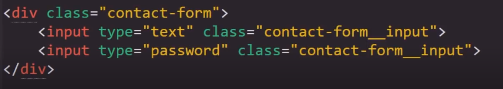
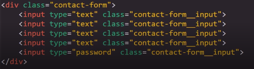
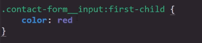
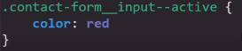
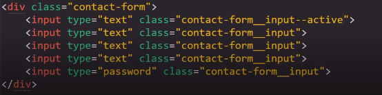
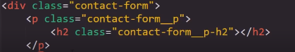

Metodologuía BEM
Se trata de una de las Metodologuías de estructura de estilos CSS más conocidas a nivel mundial, la cual consiste en basar todos los estilos unicamnete en clases, para evitar problemas de espesificidad, por su lado a estas clases se les aplicaran ciartas pautas a la hora de definir sus nombres para que de este modo no existan errores sobre a que elemento HTML estas actuan.
Al estructurar los nombres de las clases en la Metodologuía BEM se utiliza:
En primera instancia el nombre del contenedor en el que se encuantre el elemento.
Seguido de "dos pisos ( _ )"
Seguido del nombre del elementos
De este modo:
Otro caso de uso bastante probable es que un solo ducumento HTML posea varios elemtos del mismo tipo en un contenedor pero se necesite aplicar un estilo diferente a solo uno de ellos, como en el siguiente ejemplo:
Para estos casos existen dos opciones, la primea es definir dentro de CSS la pocisión del elemto de la siguiete forma:
La otra alternativa es aplicar una clase diferente para este elemento ampleando la estructura de su nombre de la siguete manera:
Como se puede ver se aplican Dos barras laterales (-)las cuales significan que todos los elemtos son iguales pero uno de ellos es especial, segidas de cualquier identificador que se desee, en este caso se usara la palabra "active"
Nota: En una paguina funcional estos estilos pueden ser alternados entre los diferentes elementos utiliando JavaScript.
Para Concluir
En los casos de que se trabaje con elemtos que se encuentren dentro de más de un contenedores la estructura del nombre de las clases seria las sguiete:
Nota: El doble piso unicamente se coloca despues del nombre del contenedor principal de la sección.